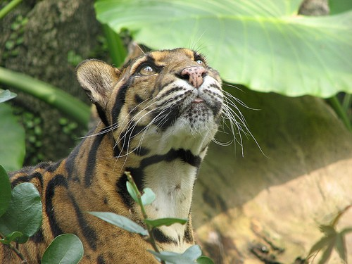
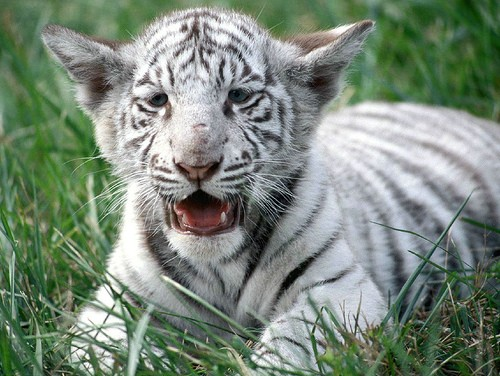
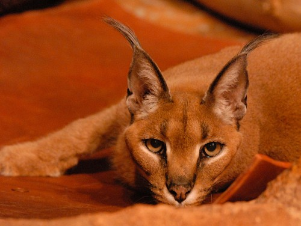

Wildcat, (species Felis silvestris), a small wild member of the cat family (Felidae) native to Eurasia and Africa. There are some three to five subspecies. The name wildcat is also used as a general term for feral domestic cats and for any of the smaller wild species of the cat family
The nominate subspecies, the European wildcat (Felis silvestris silvestris), inhabits forested regions from Scotland through continental Europe to western Asia. It is similar to the domestic cat but has longer legs, a larger, flatter head, and a full, relatively short tail ending in a rounded (not pointed) tip. The coat is yellowish gray with dark stripes and bands in the striped tabby pattern; the tail is black-ringed. The adult wildcat is 50 to 80 cm (20 to 32 inches) long, excluding a 25- to 35-cm (10- to 14-inch) tail; it stands 35–40 cm (14–16 inches) high at the shoulder and weighs from 3 to 10 kg (6.6 to 22 pounds).
Lion Cub
Neofelis
Panther
Caracal